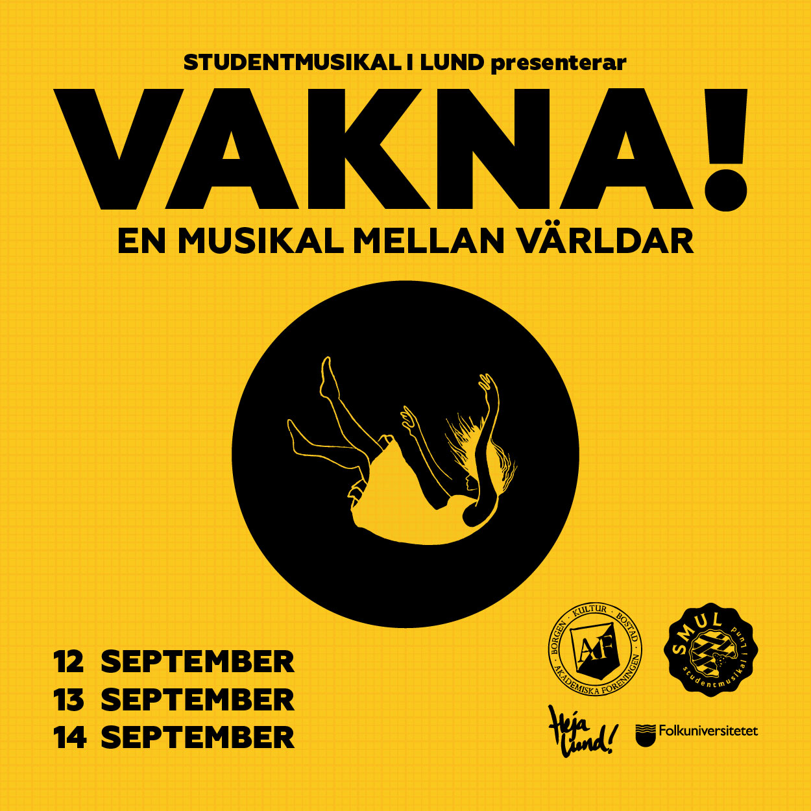
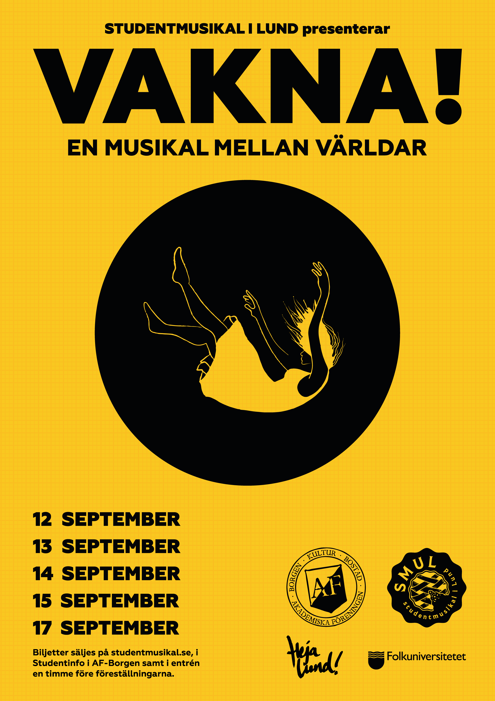
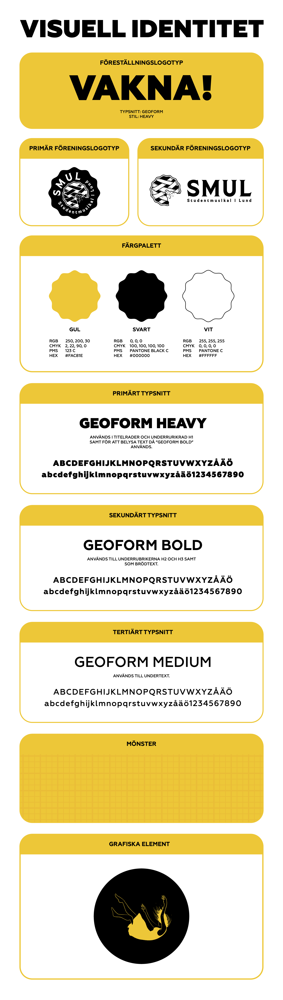

Grafisk design, illustration, webbdesign · Studentmusikal i Lund
Musikal
Grafiskt material och grafisk profil framtaget för musikalen Vakna! som sattes upp av Studentmusikal i Lund.
Min roll
Grafisk design, illustration, webbdesign
Uppdragsgivare
Studentmusikal i Lund
År
2025
Om projektet
För Studentmusikal i Lund tog jag fram den grafiska profilen för föreställningen, inklusive affisch och övrigt grafiskt material. Jag ansvarade även för att utforma och bygga föreställningens hemsida, med fokus på att skapa en sammanhållen visuell identitet genom hela kommunikationen.
Arbetet omfattade idé och koncept, grafisk form, illustration och webbdesign, från det övergripande visuella uttrycket till färdig produktion.


